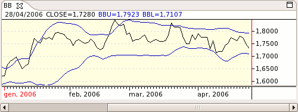

A trading band (upper and lower boundary lines) plotted at standard deviation levels above and below a moving average. Because standard deviation measures volatility, the bands widen during volatile markets and contract during calmer periods.
The major assumption that technical analysts make when using Bollinger Bands to trade is that prices tend to stay within the upper and lower band. When a price breaks through a boundary, either above the upper line or below the lower line, it usually signals that the move is strong enough to continue further. When the bands get closer together, it is more likely that there will be a price breakout. You can create the bands using any moving average. Some analysts recommend the 10-day moving average (MA) for short-term trading, the 20-day MA for intermediate trading, and the 50-day MA for long-term trading.
When using Bollinger Bands to arrive at buy and sell decisions, it is recommended you confirm potential trades with other indicators and fundamental data.

Parameters